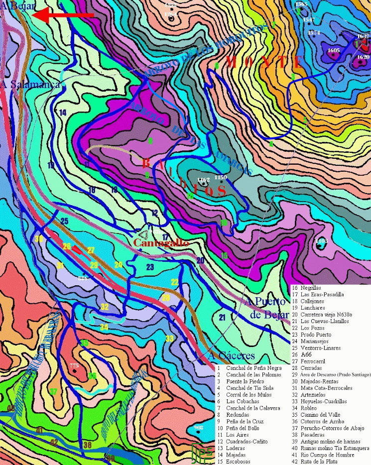

|
Colocar el ratón sobre el número del mapa y aparecerá su nombre.

|
Definiciones
Río. (Del lat. rius, rivus, arroyo). m. Corriente de agua continua y más o menos caudalosa que va a desembocar en otra, en un lago o en el mar. || 2. Gran abundancia de una cosa líquida, y, por ext., de cualquier otra.
Arroyo. (Del lat. arrugia, galería de mina y arroyo, voz de or. hisp.). m. Caudal corto de agua, casi continuo. || 2. Cauce por donde corre. || 3. Parte de la calle por donde suelen correr las aguas.
Calzada. (Del lat. vulg. *calciata, camino empedrado). f. Camino pavimentado y ancho.
Camino. (Del celtolat. camminus, voz de or. hisp.; cf. celtíbero camanon). m. Tierra hollada por donde se transita habitualmente. || 2. Vía que se construye para transitar.
Monte. (Del lat. mons, montis). m. Gran elevación natural de terreno. || 2. Tierra inculta cubierta de árboles, arbustos o matas.
Baldío, a. (De balda). adj. Dicho de la tierra: Que no está labrada ni adehesada. U. t. c. s.
Dehesa. (Del lat. defensa, defendida, acotada). f. Tierra generalmente acotada y por lo común destinada a pastos.
Portillo. (De puerta). m. Abertura en una muralla, pared o tapia. || 2. Postigo o puerta chica en otra mayor. || 3. Camino angosto entre dos alturas. || 4. Paso o entrada que se abre en un muro, vallado, etc.
Canchal. (De cancho). m. peñascal.
Peñasco. m. Peña grande y elevada.
Peña. (Del lat. pinna, pluma, ala, almena, etc.). f. Piedra grande sin labrar, según la produce la naturaleza. || 2. Monte o cerro peñascoso.
Lancha. (De or. inc.). f. Piedra más bien grande, naturalmente lisa, plana y de poco grueso.
Regajo. (De regar). m. Charco que se forma de un arroyuelo. || 2. Arroyo pequeño.
Cortinal. (De cortina). m. Pedazo de tierra cercado, inmediato a un pueblo o a casas de campo, que ordinariamente se siembra todos los años.
De topónimos
Las Eras: (Del lat. area). f. Espacio de tierra limpia y firme, algunas veces empedrado, donde se trillan las mieses.
Las Iruelas: lat. AREOLA, diminutivo de "era, espacio destinado a la trilla y limpia de mieses". Antes de las obras de la autovía había una era.
Berrocal: Sitio lleno de peñascos graníticos aislados, semejantes a grandes hitos o mojones. Con las obras de la autovía se rellenó de tierra.
Sobre el Canchal de tío Sisla existe una leyenda en la cual un fugitivo, de nombre propio Donato García, del siglo XX, se escabullía de la justicia ocultándose en una cueva, nunca hallada, y su mujer le proporcionaba alimentos con los que sobrevivir. Este lugar es un mirador natural y no parece lógico que no tuviera un nombre más antiguo, ¿puede hacer referencia este nombre y esta leyenda a otro nombre y otra leyenda más antiguos actualizados?. Quizás se refiera a la experiencia personal de los habitantes del propio pueblo que, para sobrevivir, han debido huir de los diferentes ejércitos que por sus tierras han pasado: vetones, lusitanos, romanos, visigodos, árabes, castellanos, franceses, ... .
|